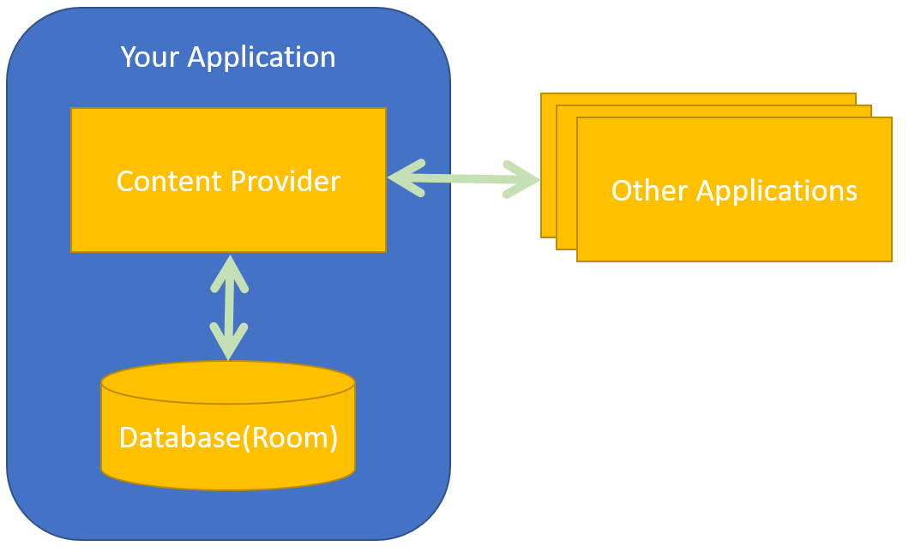

Q) I want to export my data to other applications, what should I do?
A) Implement the Content Provider (CP) Class on top of your Room Database.
Q) Do I need to implement the CP class if my data is private to my application only?
A) In this case, there is no need to implement the CP class.
So, what is Content Provider?
CP is a class that helps applications to share their data with other applications on the same device. In other words, as the name suggests, Content Providers makes your application a provider of data which is served by Room Database or any other interfaces.

Q) How can I access the Content Provider of an application?
A)Â Access to the data is provided via a Universal Resource Identifier (URI) defined by the Content Provider.
Now, let's implement the content provider class in the tasks application.
Step 1) right-click the package 'provider' and add a new content provider as shown below:

Q) What is URL Authority?
A) it is a unique name that identifies the content provider. You cannot have two content providers with the same authority value on the same device.
After adding the content provider class to your project, a new element has been added to the manifest that declares the CP class and its authorities.
<provider
android:name=".provider.TaskContentProvider"
android:authorities="fit2081.tasks.db.provider"
android:enabled="true"
android:exported="true">
</provider>
The Content Provider ApplicationÂ
Q) What methods do I need to implement in the content provider class?
A) you have to implement the following methods:
onCreate() which is called to initialize the provider
query(Uri, String[], Bundle, CancellationSignal) which returns data to the caller
 insert(Uri, ContentValues) which inserts new data into the content provider
 update(Uri, ContentValues, String, String[]) which updates existing data in the content provider
delete(Uri, String, String[]) which deletes data from the content provider
getType(Uri) which returns the MIME type of data in the content provider
onCreate()
In this method, we should get an instance of the Room database that we have created earlier.
@Override
public boolean onCreate() {
db = TasksDatabase.getDB(getContext());
return true;
}
where db is declared as :
TasksDatabase db;
query()
This method is used to query the database and return data to the caller.
It needs the following parameters:
- Uri: maps to the table name
- projection: list of columns that should be included in each row
- selection: is a string that represents the where clause
- Selection Arguments: an array of strings represents values that should be embedded in the selection statement
- sort order: a string that indicates whether to sort the data in ascending or descending order.
For example, let's have the following SQL statement:
select name,age,salary from users where age>25 and salary<1500 order by salary ASC;
The mapping table should be:
| Argument |
SQL value |
|---|
| Uri |
content_authority/users |
| projection |
["name","age","salary"] |
| Selection |
case 1: "where age>25 and salary<1500"
case 2: "where age>? and salary<?" |
| Selection Argument |
for case 1: null
for case 2: ["25","1500"] |
| sort order |
"salary ASC" or null for default |
So, the query() method implementation will be:
public Cursor query(Uri uri, String[] projection, String selection,
String[] selectionArgs, String sortOrder) {
SQLiteQueryBuilder builder = new SQLiteQueryBuilder();
builder.setTables(Task.TABLE_NAME);
String query = builder.buildQuery(projection, selection, null, null, sortOrder, null);
final Cursor cursor = db
.getOpenHelper()
.getReadableDatabase()
.query(query, selectionArgs);
return cursor;
}
Q) What is 'Cursor' which is used as a return type to query method?
A) This interface provides random read-write access to the result set returned by a database query. [Anrdoid Docs]
In other words, its a data structure that holds one or more rows retrieved from a database. It contains methods to move the cursor to the next row, previous, first, or to the last row.
insert()
This method inserts a new row to the database and returns a new Uri with the inserted row ID.
public Uri insert(@NonNull Uri uri, @Nullable ContentValues contentValues) {
long rowId = db
.getOpenHelper()
.getWritableDatabase()
.insert(Task.TABLE_NAME, 0, contentValues);
return ContentUris.withAppendedId(CONTENT_URI, rowId);
}
Q) What is contentValues?
A) It is a special data structure that is used to hold the data of one row only. It is used to send data to the database.
Q) What format does Content Values use?
A) The content values data structure uses the key-value pair format.
Q) What is the difference between Content Values and Bundle?
A) The keys in the content values are the table's columns names.
Q) What is the difference between Content Values and Cursor?
A) Content Values can hold the data of one row only, while Cursor might contain data for multiple rows.
delete()
This method is used to delete one or more rows from the database.
@Override
public int delete(Uri uri, String selection, String[] selectionArgs) {
int deletionCount;
deletionCount = db
.getOpenHelper()
.getWritableDatabase()
.delete(Task.TABLE_NAME, selection, selectionArgs);
return deletionCount;
}
The return of this method is the number of rows that get affected by the delete operation.
update()
public int update(Uri uri, ContentValues values, String selection, String[] selectionArgs) {
int updateCount;
updateCount = db
.getOpenHelper()
.getWritableDatabase()
.update(Task.TABLE_NAME, 0, values, selection, selectionArgs);
return updateCount;
}
This method is used to update an existing row in the database. It accepts similar parameters as the insert method. It returns the number of rows that get affected by the update operation.
getType()
Q) What is the purpose of the getType() method?
A)Â Â It is used by applications to retrieve the MIME type of the given content URI. In other words, is used to tell the other application the type of the return of the given URI.
UriMatcher()
This method is used to create a new instance of the UriMatcher class. In this method, we give each URI a unique code that will be used later by the content provider's methods to tell which table to use or to retrieve the requested ID.
private static final int MULTIPLE_ROWS_TASKS = 1;
private static final int SINGLE_ROW_TASKS = 2;
private static UriMatcher createUriMatcher() {
final UriMatcher uriMatcher = new UriMatcher(UriMatcher.NO_MATCH);
final String authority = CONTENT_AUTHORITY;
//sUriMatcher will return code 1 if uri like authority/tasks
uriMatcher.addURI(authority, Task.TABLE_NAME, MULTIPLE_ROWS_TASKS);
//sUriMatcher will return code 2 if uri like e.g. authority/tasks/7 (where 7 is id of row in tasks table)
uriMatcher.addURI(authority, Task.TABLE_NAME + "/#", SINGLE_ROW_TASKS);
return uriMatcher;
}
In the code above(line@13), the '#' character represents an integer value which represents an ID.
Now, let's assume we have another table called 'user', then the new UriMatacher will be:
private static UriMatcher createUriMatcher() {
final UriMatcher uriMatcher = new UriMatcher(UriMatcher.NO_MATCH);
final String authority = CONTENT_AUTHORITY;
//sUriMatcher will return code 1 if uri like authority/tasks
uriMatcher.addURI(authority, Task.TABLE_NAME, MULTIPLE_ROWS_TASKS);
//sUriMatcher will return code 2 if uri like e.g. authority/tasks/7 (where 7 is id of row in tasks table)
uriMatcher.addURI(authority, Task.TABLE_NAME + "/#", SINGLE_ROW_TASKS);
//sUriMatcher will return code 1 if uri like authority/users
uriMatcher.addURI(authority, "users", MULTIPLE_ROWS_USERS);
//sUriMatcher will return code 2 if uri like e.g. authority/users/7 (where 7 is id of row in users table)
uriMatcher.addURI(authority, "users" + "/#", SINGLE_ROW_USERS);
return uriMatcher;
}
This approach will provide us with the ability to retrieve data from the caller such as the id of the row that the caller is intended to delete.
public int delete(Uri uri, String selection, String[] selectionArgs) {
int uriType = sUriMatcher.match(uri);
int deletionCount = 0;
switch (uriType) {
case MULTIPLE_ROWS_TASKS: //no trailing row id so selection may indicate more than 1 row needs to be deleted if they can be found
deletionCount = db
.getOpenHelper()
.getWritableDatabase()
.delete(Task.TABLE_NAME, selection, selectionArgs);
break;
case SINGLE_ROW_TASKS: //trailing row id, so just one row to be deleted if it can be found
String id = uri.getLastPathSegment();
String selectionId = Task.COLUMN_ID + " = ?";
String [] selectionArgsId={String.valueOf(id)};
deletionCount = db
.getOpenHelper()
.getWritableDatabase()
.delete(Task.TABLE_NAME, selectionId, selectionArgsId);
break;
default:
throw new IllegalArgumentException("Unknown URI: " + uri);
}
return deletionCount;
}
How to access the content provider from other applications?
Q) I need to query and retrieve data from another application that works as a content provider. Do I need to implement Room database or content provider?
A)None of them is required. You should use the ContentResolver class.
Q) What is ContentResolver (CR)?
A) CR is used to access the content provider. The content resolver object contains a set of methods that mirror those of the content provider (insert, query, delete etc.).
Now, to query the tasks table and show the number of rows in a text view:
Uri uri= Uri.parse("content://fit2081.tasks.db.provider/tasks");
Cursor result= getContentResolver().query(uri,null,null,null);
tV.setText(result.getCount()+"");
Where tV is a reference to the text view. getCount() is a method that returns an integer represents the number of rows in the cursor (number rows retrieved from the content provider of the other application)
How to send a row to be saved in the database of the other application:
Remember: the insert method needs the data of the new row to be wrapped(inside) by ContentValues class.
public static final String COLUMN_NAME = "taskName";
public static final String COLUMN_DESCRIPTION = "taskDescription";
ContentValues values= new ContentValues();
values.put(COLUMN_NAME,"New Task Name");
values.put(COLUMN_DESCRIPTION,"New Task Desc");
Uri uri2= getContentResolver().insert(uri,values);